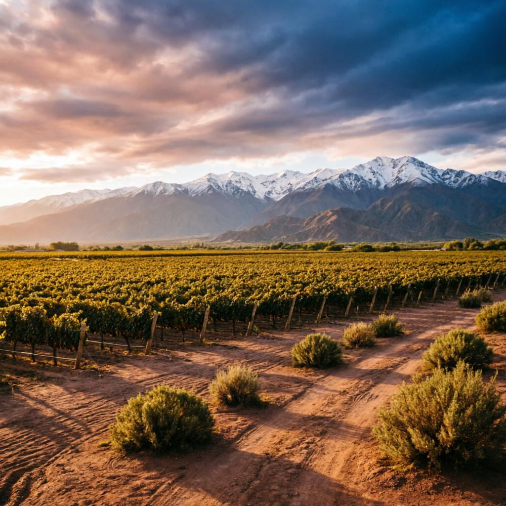
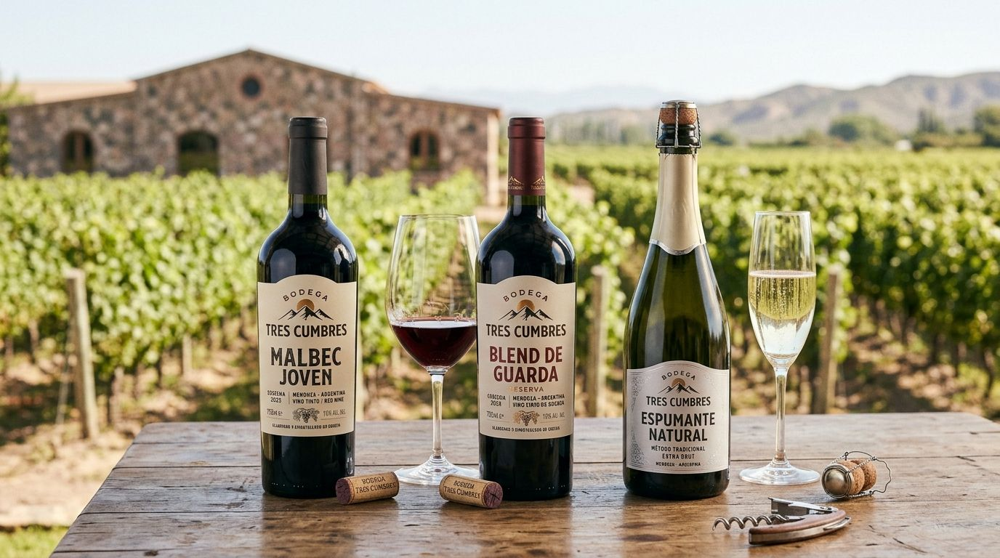
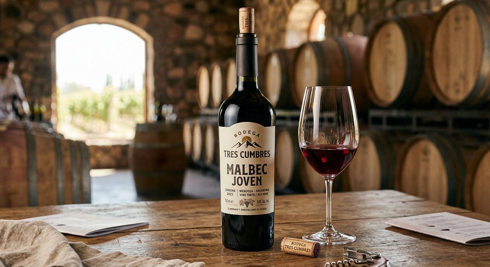
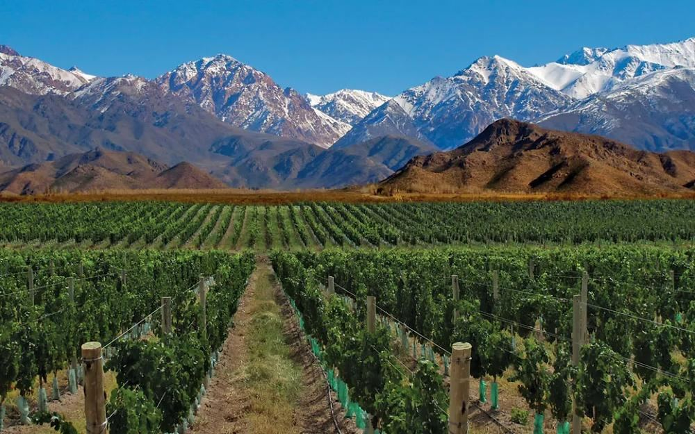

Malbec joven
Un tinto fresco y directo, pensado para disfrutar sin ceremonias.
Descripción provisoria
Una bodega boutique familiar en el Valle de Uco, Mendoza. Vinos hechos al pie de la cordillera, para compartir.
Al pie de los Andes, el paisaje marca el ritmo: cada hilera, cada estación y cada copa vienen de este lugar.
Bodega Tres Cumbres es un proyecto familiar en el Valle de Uco. Acá el vino es una excusa para recibir, mostrar el lugar y sentarse a la mesa.
Te invitamos a recorrer los viñedos, probar nuestros vinos y conocernos.

Un tinto fresco y directo, pensado para disfrutar sin ceremonias.
Descripción provisoriaUn vino para esperar y compartir en las ocasiones que se recuerdan.
Descripción provisoriaBurbujas para brindar, a la hora del encuentro.
Descripción provisoria
Una visita pensada para ir despacio y conocer el lugar donde nace cada vino.
Precios, duración, horarios y disponibilidad: consultanos.
Consultá disponibilidad
Detrás de cada botella hay personas, una tierra y muchas horas de trabajo. Esta sección va a contar esa historia con palabras de la propia familia.
Historia por completarEscribinos y coordinamos tu visita.